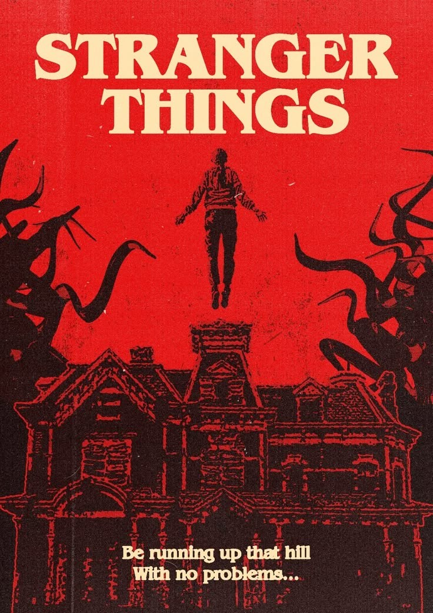

Chuck is a forgotten gem that very few people have gotten to sit down and enjoy it. The T.V series is a hilarious and ironic super spy thriller involving an awkward tech guy who has no idea what he is doing.
Stranger Things is an exceptional horror/coming of age/mystery/drama that is so well written that the average watcher will forget that they are watching a show. It’ll make you cry and then make you lose your mind right after.